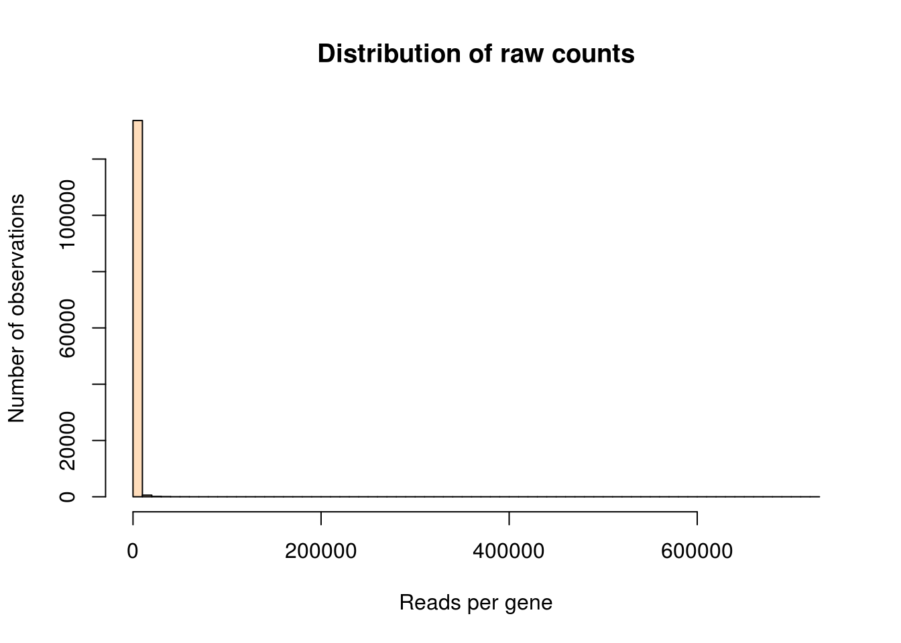
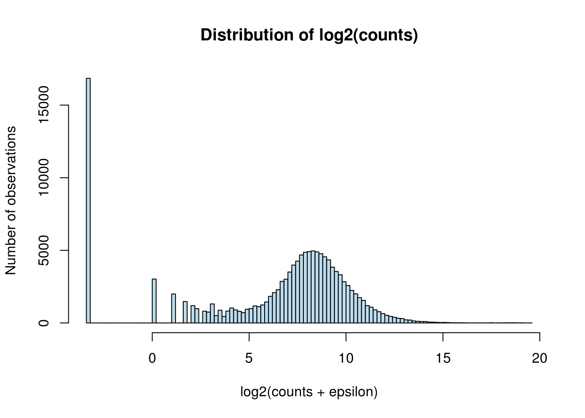
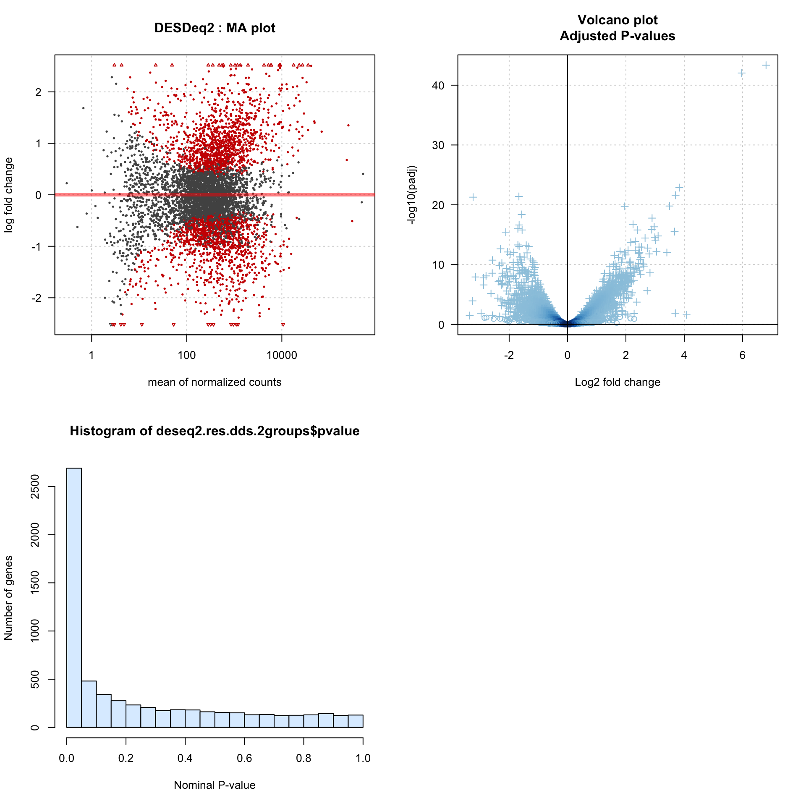

Détection de gènes différentiellement exprimés à partir de données RNA-seq
Diplôme Interuniversitaire en Bioinformatique intégrative (DU-Bii 2019)
Jacques van Helden
2019-02-25
Introduction
Depuis l’avénement du du séquençage massivement parallèle (NGS, Next Generation Sequencing) en 2007, la détection de gènes différentiellement exprimés (DEG) à partir de données transcriptomiques RNA-seq constitue l’une de ses application les plus populaires.
Le principe est de mesurer, dans différentes conditions, la concentration d’ARN correspondant à chaque gène, et de comparer ces concentrations entre les échantillons de deux (comparaison à 2 groupes ou binaire) ou plusieurs conditions (comparaison multi-groupes).
Dès les premières analyses, les chercheurs se sont rendus compte que les méthodes classiques d’analyse différentielles (tests de Student, ANOVA) ne se prêtaient pas du tout à l’analyse de telles données, car leur nature diffère fondamentalement des hypothèss de travail sous-jacentes, pour différentes raisons.
Le niveau d’expression d’un gène est quantifié sur une échelle discrète (comptage du nombre de lectures alignées qui chevauchent le gène), alors que les tests paramétriques reposent sur une hypoothèse de normalité.
Les ordres de grandeur des comptages varient fortement d’un gène à l’autre: certains gènes ont une poignée de comptages par échantillons, d’autres des centaines de milliers. Les gènes très très fortement représentés correspondent généralement à des gènes non-codants (par exemple ARN ribosomique) ou à des fonctions cellulaires particulières liées au métabolisme de l’ARN, et on comprend les raisons biologiques de leur sur-représentation. Ils n’en constituent pas moins ce qu’on appelle en statistique des “valeurs aberrantes” (“outliers”).
Les distributions de comptages comptent généralement un très grand nombre de valeurs nulles (“zero-inflated distributions”).
Ces particularités posent des problèmes particuliers pour la normalisation des librairies de comptages :
la présence d’outliers affecte fortement la moyenne, et de façon très instable, ce qui biaise fortement l’estimation de la tendance centrale.
la stratégie de repli sur des estimateurs robustes, comme la médiane est contestable du fait du très grand nombre de valeurs nulles (dans certains cas, plusn d’un quart voire la moitié des gènes ont une valeur nulle pour un échantillon).
Des méthodes spécifiques ont donc été développées dès 2010 pour affronter ces difficultés particulières de la normalisation et de l’analyse différentielle des données de RNA-seq.
But de ce TP
Le but de ce TP est d’effectuer une première exploration de l’analyse différentielle des données d’expression, sur base d’un petit cas d’étude simple: l’analyse transcriptionnelle de mutants de sporulation chez la levure Saccharomyces cerevisiae.
Cas d’étude
… A ECRIRE: DESCRIPTION DU CAS D’ETUDE
Sources des données
Paramètres de l’analyse
Nous définissons dans une variable R (de type liste) les paramètres de l’analyse. Ceci nous permettra de reproduire ultérieurement exactement la même succession d’étapes soit en utilisant des données différentes, soit en modifiant les paramètres particuliers (design, seuils, …).
## Load libraries
message("Loading libraries")
library(knitr)
#library(kableExtra) ## Note: kableExtra has some side effect on kable: column padding is null, so all numbers seem to be mixed up
#library(FactoMineR)
# library(clues)
#library(RColorBrewer)
# library(ComplexHeatmap)
library(vioplot)
library(DESeq2)
library(edgeR)
# library(corrplot)
# library(ClassDiscovery)
# library(formattable)
# message("getwd()\t", getwd())parameters <- list(
# data.folder = "data/GSE89530", # dossier des données locales
data.folder = "/shared/projects/du_bii_2019/data/module3/seance5/GSE89530", # on the IFB-cluster-core
workdir = "~/DU-Bii/m3s5/", # Directory to export the results
counts = "GSE89530_counts.tsv.gz",
sample.descr = "GSE89530_samples.tsv.gz",
alpha = 0.05, # seuil de significativité
epsilon = 0.1, # pseudo-comptage pour la transformation log2
gene.filter.percent.zeros = 90, # Discard genes having zero values in more than this percentage of samples
gene.filter.min.count = 10, # Minimal counts per gene
## Test and control groups for differential analysis
test.group = "bdf1_Y187F_Y354F_mutant_0",
control.group = "Wild_type_0"
)
## Create output directory
dir.create(parameters$workdir, showWarnings = FALSE, recursive = TRUE)
## Print the parameter values in the report
kable(t(data.frame(parameters)), col.names = "Parameter Value")| Parameter Value | |
|---|---|
| data.folder | /shared/projects/du_bii_2019/data/module3/seance5/GSE89530 |
| workdir | ~/DU-Bii/m3s5/ |
| counts | GSE89530_counts.tsv.gz |
| sample.descr | GSE89530_samples.tsv.gz |
| alpha | 0.05 |
| epsilon | 0.1 |
| gene.filter.percent.zeros | 90 |
| gene.filter.min.count | 10 |
| test.group | bdf1_Y187F_Y354F_mutant_0 |
| control.group | Wild_type_0 |
Téléchargement des données
## List files in the data folder
# list.files(parameters$data.folder)
## Load sample descriptions
message("Loading sample descriptions from file\t", parameters$sample.descr)
samples <- read.delim(file.path(parameters$data.folder, parameters$sample.descr), row.names = 1, header = TRUE)
# View(samples) # Check visually the content of the samples data frame
## Load counts of reads per gene
message("Loading counts from file\t", parameters$counts)
counts <- read.delim(file.path(parameters$data.folder, parameters$counts), row.names = 1, header = TRUE)
## Check that the count table contains the same sample IDs as the sample description table. If not, stop everything here.
if (!setequal(rownames(samples), colnames(counts))) {
stop("The sample IDs differ between count table (column names) and sample descriptions (row names). ")
}
## Check that sample IDs are ordered in the same way between sample descriptions (rows) and count table (columns).
differing.IDs <- colnames(counts) != rownames(samples)
if (sum(differing.IDs) > 0) {
## If not, re-order columnts of the count table to match the rows of the sample description.
message("Reordering columns of the count table in order to match the order of sample descrition row names")
counts <- counts[, rownames(samples)]
}La table de comptages comporte 7478 lignes (correspondant aux gènes) et 18 colonnes (correspondant aux échantillons). Nous pouvons afficher un petit morceau de cette table, ens électionnant au hasard quelques lignes et colonnes.
some.genes <- sample(1:nrow(counts), size = 10, replace = FALSE)
some.samples <- sample(1:ncol(counts), size = 4, replace = FALSE)
kable(counts[some.genes, some.samples], caption = "Random selection of some genes and some columns of the raw count table. ")| GSM2375281 | GSM2375292 | GSM2375282 | GSM2375279 | |
|---|---|---|---|---|
| YOR124C | 823 | 894 | 1159 | 1434 |
| YOR340C | 314 | 587 | 115 | 155 |
| YOL026C | 316 | 346 | 523 | 523 |
| YMR091C | 636 | 233 | 400 | 462 |
| YNL304W | 100 | 60 | 89 | 136 |
| YJR157W | 0 | 1 | 0 | 0 |
| YGR259C | 1 | 0 | 0 | 0 |
| YJR117W | 1947 | 749 | 1923 | 2456 |
| YGR252W | 528 | 153 | 359 | 356 |
| YLR387C | 514 | 478 | 1182 | 1777 |
Le tableau GSE89530_samples.tsv.gz fournit une description de chaque échantillon.
# print(samples[some.samples, ])
kable(samples[some.samples, ],
caption = "**Table de comptage de lectures (short reads) par gène.** Sélection arbitraire de quelques gènes (lignes) et échantillons (colonnes)",
align = "c")| Condition | Replicate | Genotype | Time.point | Label | |
|---|---|---|---|---|---|
| GSM2375281 | bdf1_Y187F_Y354F_mutant_0 | 1 | bdf1-Y187F-Y354F mutant | 0 | bd1bd2mut_0h_1 |
| GSM2375292 | Wild_type_8 | 3 | Wild-type | 8 | Sc_WT_8h_3 |
| GSM2375282 | bdf1_Y187F_Y354F_mutant_4 | 1 | bdf1-Y187F-Y354F mutant | 4 | bd1bd2mut_4h_1 |
| GSM2375279 | Wild_type_4 | 1 | Wild-type | 4 | Sc_WT_4h_1 |
Exploration des données
Avant toute autre chose, il convient de mener une exploration préliminaire des données, afin de se familiariser avec leur distribution.
Statistiques descriptives
La fonction R summary() calcule des statistiques de base pour chaque colonne d’une matrice ou data frame. Nous imprimons ici un sous-ensemble de ces échantillons.
summary(counts[, some.samples]) GSM2375281 GSM2375292 GSM2375282 GSM2375279
Min. : 0 Min. : 0.0 Min. : 0 Min. : 0.0
1st Qu.: 23 1st Qu.: 24.0 1st Qu.: 32 1st Qu.: 36.0
Median : 253 Median : 166.0 Median : 262 Median : 310.0
Mean : 1007 Mean : 982.6 Mean : 903 Mean : 979.8
3rd Qu.: 684 3rd Qu.: 462.0 3rd Qu.: 647 3rd Qu.: 734.8
Max. :588022 Max. :571353.0 Max. :542630 Max. :565085.0 Nous pouvons calculer quelques paramètres additionnels, qui nous éclaireront sur les données.
all.counts.vector <- unlist(counts) # Regroup all counts in a vevtor to compute statistics
count.stats <- data.frame(
mean = mean(all.counts.vector),
sd = sd(all.counts.vector),
iqr = IQR(all.counts.vector),
min = min(all.counts.vector),
P05 = quantile(all.counts.vector, probs = 0.05),
Q1 = quantile(all.counts.vector, probs = 0.25),
median = quantile(all.counts.vector, probs = 0.5),
Q3 = quantile(all.counts.vector, probs = 0.75),
P95 = quantile(all.counts.vector, probs = 0.95),
P99 = quantile(all.counts.vector, probs = 0.99),
max = max(all.counts.vector)
)
# View(count.stat) # for quick check in R interface
kable(t(count.stats),
caption = "Statistics on raw count values (all samples together)",
format.args = list(decimal.mark = '.', big.mark = ","), digits = 2,
col.names = "Parameter value")| Parameter value | |
|---|---|
| mean | 827.44 |
| sd | 8,891.07 |
| iqr | 524.00 |
| min | 0.00 |
| P05 | 0.00 |
| Q1 | 24.00 |
| median | 206.00 |
| Q3 | 548.00 |
| P95 | 2,321.70 |
| P99 | 7,759.73 |
| max | 722,346.00 |
rm(all.counts.vector) ## Free memory spaceNous pouvons également appliquer ces méthodes à chaque échantillon séparément, au moyen de la fonction apply()
## Compute sample means using the apply() function
sample.means <- apply(counts, 2, mean)
## Compute different stats per sample and store them as columns of a data frame
sample.stats <- data.frame(
label = samples$Label,
mean = apply(counts, 2, mean),
sd = apply(counts, 2, sd),
zeros = apply(counts == 0, 2, sum),
Q1 = apply(counts, 2, quantile, probs = 0.75),
median = apply(counts, 2, median),
Q3 = apply(counts, 2, quantile, probs = 0.75),
P95 = apply(counts, 2, quantile, probs = 0.95),
lib.size.Mb = apply(counts, 2, sum)/1e6
)
kable(sample.stats,
caption = "Sample-wise statistics",
digits = c(0,0,0,0,0,0,0,0,1),
format.args = list(decimal.mark = '.', big.mark = ","),
align = "l")| label | mean | sd | zeros | Q1 | median | Q3 | P95 | lib.size.Mb | |
|---|---|---|---|---|---|---|---|---|---|
| GSM2375281 | bd1bd2mut_0h_1 | 1,007 | 10,212 | 957 | 684 | 253 | 684 | 2,952 | 7.5 |
| GSM2375287 | bd1bd2mut_0h_2 | 632 | 6,591 | 1,083 | 412 | 147 | 412 | 1,897 | 4.7 |
| GSM2375293 | bd1bd2mut_0h_3 | 636 | 6,584 | 1,078 | 423 | 151 | 423 | 1,898 | 4.8 |
| GSM2375278 | Sc_WT_0h_1 | 1,127 | 11,725 | 957 | 775 | 297 | 775 | 3,385 | 8.4 |
| GSM2375284 | Sc_WT_0h_2 | 521 | 5,592 | 1,101 | 362 | 135 | 362 | 1,567 | 3.9 |
| GSM2375290 | Sc_WT_0h_3 | 779 | 7,821 | 1,026 | 548 | 194 | 548 | 2,187 | 5.8 |
| GSM2375282 | bd1bd2mut_4h_1 | 903 | 9,814 | 811 | 647 | 262 | 647 | 2,569 | 6.8 |
| GSM2375288 | bd1bd2mut_4h_2 | 638 | 7,149 | 942 | 436 | 173 | 436 | 1,818 | 4.8 |
| GSM2375294 | bd1bd2mut_4h_3 | 732 | 8,118 | 850 | 515 | 208 | 515 | 2,102 | 5.5 |
| GSM2375279 | Sc_WT_4h_1 | 980 | 9,135 | 878 | 735 | 310 | 735 | 2,830 | 7.3 |
| GSM2375285 | Sc_WT_4h_2 | 810 | 8,039 | 898 | 595 | 254 | 595 | 2,264 | 6.1 |
| GSM2375291 | Sc_WT_4h_3 | 632 | 5,556 | 1,013 | 470 | 194 | 470 | 1,853 | 4.7 |
| GSM2375283 | bd1bd2mut_8h_1 | 804 | 9,438 | 835 | 500 | 190 | 500 | 2,187 | 6.0 |
| GSM2375289 | bd1bd2mut_8h_2 | 956 | 10,819 | 808 | 626 | 248 | 626 | 2,608 | 7.1 |
| GSM2375295 | bd1bd2mut_8h_3 | 919 | 9,672 | 862 | 643 | 239 | 643 | 2,689 | 6.9 |
| GSM2375280 | Sc_WT_8h_1 | 1,078 | 10,956 | 879 | 607 | 230 | 607 | 2,672 | 8.1 |
| GSM2375286 | Sc_WT_8h_2 | 756 | 8,022 | 893 | 476 | 189 | 476 | 1,942 | 5.7 |
| GSM2375292 | Sc_WT_8h_3 | 983 | 11,193 | 973 | 462 | 166 | 462 | 2,219 | 7.3 |
Comparaison moyenne - variance par gène
gene.stats <- data.frame(
mean = apply(counts, 1, mean),
var = apply(counts, 1, var),
sd = apply(counts, 1, sd)
)
plot(x = gene.stats$mean, y = gene.stats$var,
main = "Mean / variance plot",
xlab = "Mean per gene",
ylab = "Var per gene", log="xy",
col = densCols(x = gene.stats$mean, y = gene.stats$var))
abline()
Mean-Variance plot
Distribution des comptages
## Compute some basic statistics
## Display histogram of the raw counts
hist(unlist(counts),
breaks = 100,
col = "#FFDDBB",
xlab = "Reads per gene",
ylab = "Number of observations",
main = "Distribution of raw counts")
Cet histogramme n’est pas très informatif, car toutes les valeurs sont concentrées dans la première tranche (à l’extrême gauche). Ceci résulte du fiat que les intervalles de classe ont été définis sur base de l’étendue totale, et qu’il existe apparemment une observation qui a une valeur énorme par rapport aux autres (valeur aberrante, “outlier”). De fait, la valeur la plus élevée (722346) dépasse de très loin la moyenne (827.4361757)
Afin de visualiser toute l’étendue des observations tout en mettant plus de détail sur les valeurs faibles, nous pouvons effectuer une transformation logarithmique. Nous devons cependant prêter attention à certains détails.
Conventionnellement, on utlise la transformation log2 pour les données RNA-seq, car elle fournit un découpage plus fin des valeurs couvertes.
Les données RnA-seq contiennent généralement un bon nombre de valeurs nulles (gènes non détectés), qui posent un problème pour la conversion logarithmique (\(log(0) = -\infty\)). On contourne ce problème en ajoutant aux comptages un petit nombre arbitraire, qu’on dénomme pseudo-comptage et qu’on symbolise par la lettre grècque epsilon (\(\epsilon\)).
Il est cournant d’ajouter la valeur \(1\), mais nous préférons ajouter une valeur inférieure à 1, pour bien distinguer les comptages réels (qui peuvent de fait prendre une valeur 1) des pseudo-comptages.
Pour cette analyse nous choisissons \(\epsilon = 0.1\).
La conversion donne donc.
\[\text{log2count}= log2(n + \epsilon) = log2(n + 0.1) \] L’histogramme des log2counts est plus informatif que celui des comptages bruts.
counts.log2 <- log2(counts + parameters$epsilon)
hist(unlist(counts.log2),
xlab = "log2(counts + epsilon)",
ylab = "Number of observations",
main = "Distribution of log2(counts)",
breaks = 100, col = "#BBDDEE")
Notons d’emblée le pic très élevé à gauche, qui correspond à toutes les observations nulles. Sur l’axe \(X\), il apparait à la valeur \(-3.3\), qui correspond à \(log_2(\epsilon) = log_2(0.1)\).
Boîtes à moustache
Les boîtes à moustache sont très utilisées pour obtenir une vision d’ensemble de plusieurs distribution.
## Associate a specific color to each condition
conditions <- unique(samples$Condition)
condition.colors <- rainbow(n = length(conditions))
names(condition.colors) <- conditions
## Associate a color to each sample according to its condition
samples$color <- condition.colors[samples$Condition]
par.ori <- par(no.readonly = TRUE) # Store the original value of the graphical parameters before modifying them
# Box plot of counts and log2-transformed counts
par(mfrow = c(1,2))
par(mar = c(5.1, 8.1, 4.1, 1.1)) # Increase leftmargin for sample labels
boxplot(counts, horizontal = TRUE, las = 1, names = samples$Label, col = samples$color, xlab = "Raw counts")
boxplot(counts.log2, horizontal = TRUE, las = 1, names = samples$Label, col = samples$color, xlab = "log2counts")Boxplot of the counts per gene in each sample. Left: raw counts. Right: log2_transformed counts.
par(par.ori)Violin plots
# Violin Plots
par(mfrow = c(1,2))
par(mar = c(5.1, 8.1, 4.1, 1.1)) # Increase left margin for sample labels
par(las = 1)
vioplot(as.list(counts), horizontal = TRUE,
col = samples$color, xlab = "Raw counts",
main = "Violin plot\nRaw counts",
names = samples$Label)
vioplot(as.list(counts.log2), horizontal = TRUE,
col = samples$color, xlab = "Log2(counts + epsilon)",
main = "Violin plot\nlog-transformed counts",
names = samples$Label)Violin plots. Left: raw counts. Right: log2-transformed counts.
par(par.ori)Filtrage des gènes
Gènes à variance nulle (valeur constante)
## Zero-variance filter
gene.var <- apply(counts, 1, var)
## Define a Boolean vector (TRUE/FALSE)
## indicating whether each gene has a null variance.
zero.var.genes <- gene.var == 0
kable(table(zero.var.genes))| zero.var.genes | Freq |
|---|---|
| FALSE | 6918 |
| TRUE | 560 |
## Count the number of genes having a zero variance
# sum(gene.var == 0)Nous écartons les gènes qui ont une variance nulle (autrement dit, qui ont les mêmes valeurs pour tous les échantillons), puisque leurs moyennes seront forcément identiques entre conditions. Dans notre jeu de données, ceci nous amène à écarter 560
Pourcentage de valeurs nulles
## Discard genes having zeros in at least 95% of samples
message("Applying threshold on the percent of non-zero counts per gene: ", parameters$gene.filter.percent.zeros, "%")
## A Boolean table indicating whether each count is null (TRUE) or not (FALSE)
zero.counts <- counts == 0
## Count number of zero values per gene (=row of the expression table)
percent.zeros <- 100*apply(zero.counts, 1, sum) / ncol(counts)
# Note: we store the histogram values in a variable named "h" for further use
h <- hist(percent.zeros,
breaks = 20, col = "#DDDDDD",
main = "Filter on the percentage of zero counts",
xlab = "Percent of samples", ylab = "Number of genes", las = 1)
# View(h)
## Get histogram max counts (y value) to position the arrow
h.max <- max(h$counts)
arrows(x0 = parameters$gene.filter.percent.zeros,
y0 = h.max * 0.5,
x1 = parameters$gene.filter.percent.zeros,
y1 = h.max * 0.3,
col = "red", lwd = 2,
angle = 30, length = 0.1)
arrows(x0 = parameters$gene.filter.percent.zeros,
y0 = h.max * 0.5,
x1 = 100,
y1 = h.max * 0.5, code = 0,
col = "red", lwd = 4,
angle = 30, length = 0.1)
text(x = parameters$gene.filter.percent.zeros,
y = h.max*0.5,
labels = paste(sep = "", parameters$gene.filter.percent.zeros, "%"),
col = "red", pos = 3)Frequency of samples with zero counts per gene. Genes exceeding the thresold (red arrow) were filtered out.
Comptages minimaux par gène
Un autre critère possible est de supprimer les gènes faiblement détectés, en écartant les gènes pour lesquels les comptages sont inférieurs à un seuil donné pour tous les échantillons. Nous fixons ici (arbitrairement) le seuil à 10.
Nous procédont comme suit:
- Calculer pour chaque gène \(i\) le comptage maximal observé parmi tous les échantillons.
\[x_{max,i} = \text{max}_{j = 0}^{s} x_{i,j}\]
où \(i\) est l’indice de lignes (gènes), \(j\) l’indice de colonnes (échantillons), et \(s\) le nombre d’échantillons.
- Tester si la valeur maximale observée est inférieure au seuil minimum.
max.per.gene <- apply(counts, 1, max)
# View(summary(min.count))
h <- hist(log2(max.per.gene + parameters$epsilon), breaks = 100, col = "#BBBBFF",
xlab = "log2(max count per gene)",
ylab = "Number of genes", las = 1,
main = "Filtering on min count per gene")
h.max <- max(h$counts)
arrows(x0 = log2(parameters$gene.filter.min.count),
y0 = h.max * 0.5,
x1 = log2(parameters$gene.filter.min.count),
y1 = h.max * 0.3,
col = "red", lwd = 2,
angle = 30, length = 0.1)
arrows(x0 = log2(parameters$epsilon),
y0 = h.max * 0.5,
x1 = log2(parameters$gene.filter.min.count),
y1 = h.max * 0.5,
col = "red", lwd = 4, code = 0,
angle = 30, length = 0.1)
text(x = log2(parameters$gene.filter.min.count),
y = h.max * 0.5,
labels = paste(sep = "", "log2(",
parameters$gene.filter.min.count,
") = ", signif(digits = 3, log2(parameters$gene.filter.min.count))),
col = "red", pos = 3)Distribution of max counts per gene. Genes below the thresold (red arrow) are filtered out.
# Build a data frame with one row per gene and one column per filtering criterion
discarded.genes <- data.frame(
zero.var = zero.var.genes,
too.many.zeros = (percent.zeros > parameters$gene.filter.percent.zeros),
too.small.counts = max.per.gene < parameters$gene.filter.min.count
)
## Print the discarding criteria for some genes
kable(discarded.genes[some.genes, ], caption = "Gene filtering criteria. TRUE indicates that a gene is discarded. ")| zero.var | too.many.zeros | too.small.counts | |
|---|---|---|---|
| YOR124C | FALSE | FALSE | FALSE |
| YOR340C | FALSE | FALSE | FALSE |
| YOL026C | FALSE | FALSE | FALSE |
| YMR091C | FALSE | FALSE | FALSE |
| YNL304W | FALSE | FALSE | FALSE |
| YJR157W | FALSE | FALSE | TRUE |
| YGR259C | FALSE | FALSE | TRUE |
| YJR117W | FALSE | FALSE | FALSE |
| YGR252W | FALSE | FALSE | FALSE |
| YLR387C | FALSE | FALSE | FALSE |
## Draw a venn diagram indicating the number of genes
## discarded by the different criteria.
venn.counts <- vennCounts(discarded.genes)
vennDiagram(venn.counts, cex = 0.8,
main = "Genes discarded by different criteria")Number of genes discarded during the filtering step.
## Genes passing the filters are those for which
## all the discarding criteria are FALSE,
## i.e. the sum of the row is 0
filtered.genes <- apply(discarded.genes, 1, sum) == 0
## Select a matrix with the filtered genes,
## i.e. those not discarded by any criterion
filtered.counts <- counts[filtered.genes, ]
## Update the set of test genes to avoir NA values
some.genes <- sample(1:nrow(filtered.counts), size = 10, replace = FALSE)Reproductibilité des réplicats
Nous pouvons comparer les réplicats pour une même condition au moyen d’un nuage de points, avec la fonction plot().
## Sélectionner les échantillons de la condition "test"
message("Comparing counts between replicates for condition", parameters$test.group)
selected.samples <- samples$Condition == parameters$test.group
plot(counts.log2[, selected.samples],
col = samples[selected.samples, "color"])Between-replicate comparison of counts per gene for the test condition.
Détection de gènes différentiellement exprimés avec edgeR
Comparaison entre 2 groupes
Dans un premier temps, nous allons effectuer une simple comparaison de 2 groupes: sauvage versus mutant au temps 0.
## Detection of Differentially Expressed Genes (DEG) with edgeR
message("Detecting Differentially Expressed Genes (DEG) with edgeR")
## Select the subsets of counts (columns) and samples (rows) corresponding to the control and test groups
control.samples <- which(samples$Condition == parameters$control.group)
test.samples <- which(samples$Condition == parameters$test.group)
selected.samples <- c(test.samples, control.samples)
## Select samples for a 2-group
## Build a "model matrix" from the class labels
## This matrix contains one row per sample and one column per class
designMat <- model.matrix(~ as.vector(samples[selected.samples, "Condition"]))
# View(designMat)
## Build an edgeR::DGEList object which is required to run edgeR DE analysis
dgList <- DGEList(counts = filtered.counts[, selected.samples])
# class(dgList)
# is(dgList)
## Estimate the dispersion parameters.
message("\tedgeR\tEstimating dispersion")
dgList <- estimateDisp(dgList, design = designMat)
dgList <- estimateTagwiseDisp(dgList, design = designMat)
## Fit edgeR model for differential expression analysis.
## We chose glmQLFit because it is claimed to offer a more accurate control of type I error.
message("\tedgeR\tmodel fitting with glmQLFit()")
fit <- glmQLFit(dgList, design = designMat)
## Run test to detect differentially expressed genes
message("\tedgeR\tdetecting differentially expressed genes with glmQLFTest()")
qlf <- glmQLFTest(fit, coef = 2:ncol(designMat))
qlf.TT <- topTags(qlf, n = nrow(qlf$table), sort.by = "none",
adjust.method = "fdr")
## Select differentially expressed genes
edgeR.DEG.table <- as.data.frame(qlf.TT$table)
## Compute some additional statistics
edgeR.DEG.table$evalue <- edgeR.DEG.table$PValue * nrow(edgeR.DEG.table)
edgeR.DEG.table$rank <- rank(edgeR.DEG.table$FDR, ties.method = "average")
edgeR.DEG.table$positive <- edgeR.DEG.table$FDR < parameters$alpha
# table(edgeR.DEG.table$positive)
# names(edgeR.DEG.table)
# View(edgeR.DEG.table)
# sum(egeR.DEG)Exercices (solutions ci-dessous)
Dessinez un nuage de points (
plot()) comparant les P-valeurs ajustées et non-ajustées.Quel serait le nombre de faux-positifs attendus sous hypothès nulle si l’on appliquait le seuil \(\alpha = 0.05\) à la p-valeur non-ajustée ?
Comptez le nombre de gènes déclarés positifs selon qu’on applique le seuil \(\alpha = 0.05\) à la p-valeur ajustée ou non-ajustée.
Dessinez un histogramme (
hist()) des P-valeurs non ajustées, avec 20 intervalles de classe (breaks = 20). Observez la répartition des gènes dans la moitié inférieure (p-valeur < 0.5) et supérieure (p-valeur > 0.5) de l’histogramme. Interprétez le résultat en 2 ou 3 phrases. A quoi s’attendrait-on si tous les gènes étaient sous hypothèse nulle ?Dessinez un nuage de points (
plot()) comparant le log2(fold-change) en abscisse et la P-valeur en ordonnée. Interprétez le résultat en 2 ou 3 phrases. Où se trouvent les gènes signicatifs ?Dessinez un volcano plot, c’est-à-dire un nuage de points (
plot()) présentant en abscisse le log2(fold-change), et en ordonnée la significativité, définie comme suit.
\[\text{sig} = -log_{10}(\text{FDR})\]
Interprétez le résultat en 2 ou 3 phrases. Commentez la relation entre le logFC et la significativité. Où se trouvent les gènes signicatifs ?
Adjusted versus non-adjusted P-values
# class(qlf.TT)
plot(edgeR.DEG.table$PValue, edgeR.DEG.table$FDR,
main = "Multiple testing correction",
xlab = "Nominal p-value",
ylab = "FDR",
log = "xy",
col = densCols(x = edgeR.DEG.table$PValue,
y = edgeR.DEG.table$FDR),
panel.first = grid(),
las = 1)
abline(h = parameters$alpha, col = "#BB0000")
abline(v = parameters$alpha, col = "#FF0000", lty = "dashed")
legend("topleft",
legend = c(
paste(sep = "", "p-value < ", parameters$alpha, ": ",
sum(edgeR.DEG.table$PValue < parameters$alpha), " genes"),
paste(sep = "", "FDR < ", parameters$alpha, ": ", sum(edgeR.DEG.table$FDR < parameters$alpha), " genes" )))Ajusted (ordinate) versus non-adjusted (abscissa) p-values returned by edger. Strong colors indicate a higher density of overlapping points. Note the strong impact of the multiple testing correction.
Histogram of the nominal P-values
## P-value histogram
hist(edgeR.DEG.table$PValue,
breaks = 20, col = "#DDEEFF", las = 1,
main = "edgeR P-value histogram",
xlab = "Nominal P-value",
ylab = "Number of genes")Histogram of edgeR nominal P-values.
Volcano plot
# Quick test: plot the different symbols
# plot(1:30, pch = 1:30)
# Assign a graphical symbol to each gene according to its positive/negative status
edgeR.DEG.table$pch <- 1 # circle symbol
edgeR.DEG.table$pch[edgeR.DEG.table$positive] <- 3 # + symbol
par(mfrow = c(1,2))
plot(x = edgeR.DEG.table$logFC,
y = -log10(edgeR.DEG.table$PValue),
las = 1,
xlab = "log2(fold-change)",
main = "Volcano plot of edgeR unadjusted p-values",
ylab = "-log10(P-value)",
pch = edgeR.DEG.table$pch,
col = densCols(x = edgeR.DEG.table$logFC,
y = -log10(edgeR.DEG.table$PValue)),
panel.first = grid())
abline(v = 0)
abline(h = 0)
plot(x = edgeR.DEG.table$logFC,
y = -log10(edgeR.DEG.table$FDR),
las = 1,
xlab = "log2(fold-change)",
main = "Volcano plot of edgeR FDR",
ylab = "-log10(P-value)",
pch = edgeR.DEG.table$pch,
col = densCols(x = edgeR.DEG.table$logFC,
y = -log10(edgeR.DEG.table$FDR)),
panel.first = grid())
abline(v = 0)
abline(h = 0)
abline(h = -log10(parameters$alpha), col = "#BB0000")Volcano plots of edgeR unadjusted (left) and adjusted (right) P-values. Multple testing correction method: FDR.
par(mfrow = c(1,1))Détection de gènes différentiellement exprimés avec DESeq2
Nous allons maintenant utiliser DESeq2 pour détecter des gènes différentiellement exprimés sur le même jeu de données. Nous comparerons ensuite les résultats obtenus avec edgeR et DESeq2, respectivement.
Comparaison de 2 groupes
Dans un premier temps, nous allons effectuer une simple comparaison de 2 groupes: sauvage versus mutant au temps 0.
## Use the DESeqDataSetFromMatrix to create a DESeqDataSet object
message("Creating DESeq2 dataset")
dds.2groups <- DESeqDataSetFromMatrix(
countData = filtered.counts[, selected.samples],
colData = samples[selected.samples, ],
design = ~ Condition)
# View(dds.all.conditions)
## Run differential expression analysis with DESeq2
dds.2groups <- DESeq(dds.2groups)
# View(dds.all.conditions)
resultsNames(dds.2groups)[1] "Intercept" "Condition_Wild_type_0_vs_bdf1_Y187F_Y354F_mutant_0"## Get the result table
deseq2.res.dds.2groups <- as.data.frame(results(dds.2groups))
kable(deseq2.res.dds.2groups[some.genes, ])| baseMean | log2FoldChange | lfcSE | stat | pvalue | padj | |
|---|---|---|---|---|---|---|
| YER082C | 479.2833 | 0.8415339 | 0.4779487 | 1.7607200 | 0.0782858 | 0.4033263 |
| YDR212W | 1020.3173 | 0.2929028 | 0.1962466 | 1.4925239 | 0.1355619 | 0.5131630 |
| YDR115W | 319.5801 | -0.1153610 | 0.1901865 | -0.6065678 | 0.5441378 | 0.8413513 |
| YDR186C | 872.0110 | 0.2269613 | 0.2224907 | 1.0200935 | 0.3076841 | 0.6932773 |
| YPL269W | 100.2759 | -0.1627581 | 0.1945216 | -0.8367100 | 0.4027556 | 0.7620706 |
| YMR019W | 237.4699 | 0.0831728 | 0.1953802 | 0.4256971 | 0.6703286 | 0.9008417 |
| YPL043W | 431.2321 | 0.6515057 | 0.6306717 | 1.0330347 | 0.3015877 | 0.6880328 |
| YJL034W | 3608.2380 | -0.4890071 | 0.2352843 | -2.0783672 | 0.0376756 | 0.2841866 |
| YGL086W | 288.2153 | -0.3076720 | 0.1506435 | -2.0423852 | 0.0411133 | 0.2947158 |
| YOR130C | 147.8431 | -0.1934900 | 0.2247223 | -0.8610181 | 0.3892281 | 0.7517258 |
## Sort genes by significance (increasing adjusted pvalue)
deseq2.res.dds.2groups <- deseq2.res.dds.2groups[order(deseq2.res.dds.2groups$padj, decreasing = FALSE), ]
## Compute the E-value, i.e. the expected number of false positives
deseq2.res.dds.2groups$evalue <- deseq2.res.dds.2groups$pvalue * nrow(deseq2.res.dds.2groups)
## Flag the genes declared positive
## (i.e. differentially expressed genes)
deseq2.res.dds.2groups$positive <- deseq2.res.dds.2groups$padj < parameters$alpha
## Replace NA values by FALSE for the flag
deseq2.res.dds.2groups$positive[is.na(deseq2.res.dds.2groups$positive)] <- FALSE
kable(head(deseq2.res.dds.2groups, n=20), caption = "Most significant genes")| baseMean | log2FoldChange | lfcSE | stat | pvalue | padj | evalue | positive | |
|---|---|---|---|---|---|---|---|---|
| YLR399C | 1493.19551 | -2.3243504 | 0.2069533 | -11.231280 | 0 | 0.0000000 | 0.0000000 | TRUE |
| YDR007W | 418.91210 | -1.6043646 | 0.1445706 | -11.097447 | 0 | 0.0000000 | 0.0000000 | TRUE |
| YJL088W | 229.89814 | 2.9262730 | 0.2724641 | 10.740032 | 0 | 0.0000000 | 0.0000000 | TRUE |
| YOL058W | 981.12872 | 2.3988022 | 0.2344494 | 10.231642 | 0 | 0.0000000 | 0.0000000 | TRUE |
| YFR047C | 109.01669 | 2.1077362 | 0.2433336 | 8.661921 | 0 | 0.0000000 | 0.0000000 | TRUE |
| YBR294W | 98.81111 | 1.7506191 | 0.2318293 | 7.551327 | 0 | 0.0000000 | 0.0000000 | TRUE |
| YIL014C-A | 45.77600 | 2.4609476 | 0.3410869 | 7.215017 | 0 | 0.0000000 | 0.0000000 | TRUE |
| YAL067C | 381.48174 | 2.6737612 | 0.3791296 | 7.052368 | 0 | 0.0000000 | 0.0000000 | TRUE |
| YBR240C | 34.35300 | 2.8207147 | 0.4109765 | 6.863446 | 0 | 0.0000000 | 0.0000000 | TRUE |
| YHR047C | 530.78940 | -1.0718867 | 0.1593139 | -6.728141 | 0 | 0.0000000 | 0.0000001 | TRUE |
| YNL030W | 3072.10338 | -0.7370082 | 0.1097727 | -6.713950 | 0 | 0.0000000 | 0.0000001 | TRUE |
| YHR137W | 1509.94606 | -1.0567978 | 0.1647401 | -6.414938 | 0 | 0.0000001 | 0.0000009 | TRUE |
| YKR093W | 650.83783 | -1.4441538 | 0.2253986 | -6.407110 | 0 | 0.0000001 | 0.0000009 | TRUE |
| YFR006W | 1368.72765 | -0.9060062 | 0.1416934 | -6.394132 | 0 | 0.0000001 | 0.0000010 | TRUE |
| YBR022W | 142.26456 | 1.1756615 | 0.1848333 | 6.360659 | 0 | 0.0000001 | 0.0000013 | TRUE |
| YJR024C | 202.72279 | 1.2492129 | 0.1970188 | 6.340577 | 0 | 0.0000001 | 0.0000014 | TRUE |
| YBR183W | 406.55059 | -0.8474896 | 0.1346188 | -6.295475 | 0 | 0.0000001 | 0.0000019 | TRUE |
| YKL216W | 4004.60474 | 1.2198179 | 0.1942348 | 6.280120 | 0 | 0.0000001 | 0.0000021 | TRUE |
| YBR054W | 1334.84237 | 1.5952637 | 0.2578580 | 6.186599 | 0 | 0.0000002 | 0.0000039 | TRUE |
| YIR039C | 38.30521 | 2.5536706 | 0.4191538 | 6.092443 | 0 | 0.0000003 | 0.0000070 | TRUE |
## BEWARE, DESeq2 produces NA values for some genes
kable(tail(deseq2.res.dds.2groups, n=10), caption = "Less significant genes")| baseMean | log2FoldChange | lfcSE | stat | pvalue | padj | evalue | positive | |
|---|---|---|---|---|---|---|---|---|
| YOR263C | 2.3089312 | -1.1595815 | 1.149310 | -1.0089372 | 0.3130048 | NA | 1963.7918 | FALSE |
| YOR331C | 0.1231839 | -1.0750364 | 4.080249 | -0.2634732 | 0.7921859 | NA | 4970.1742 | FALSE |
| YOR391C | 0.2780969 | -0.0879149 | 3.035988 | -0.0289576 | 0.9768984 | NA | 6129.0607 | FALSE |
| YPL038W-A | 2.2393034 | -1.0117635 | 1.190819 | -0.8496366 | 0.3955272 | NA | 2481.5375 | FALSE |
| YPL152W-A | 0.1079283 | 0.8293298 | 4.077941 | 0.2033697 | 0.8388461 | NA | 5262.9202 | FALSE |
| YPL241C_intron | 0.8880141 | 0.5482611 | 1.729875 | 0.3169369 | 0.7512915 | NA | 4713.6029 | FALSE |
| YPR002C-A | 1.2750214 | -1.8836811 | 1.553112 | -1.2128429 | 0.2251899 | NA | 1412.8413 | FALSE |
| YPR076W | 1.9291144 | 2.3035824 | 1.370506 | 1.6808258 | 0.0927968 | NA | 582.2068 | FALSE |
| YPR077C | 1.6462730 | 1.0861263 | 1.275033 | 0.8518414 | 0.3943021 | NA | 2473.8515 | FALSE |
| YPR170C | 2.1750791 | -0.0237664 | 1.069474 | -0.0222225 | 0.9822704 | NA | 6162.7648 | FALSE |
kable(table(deseq2.res.dds.2groups$positive),
caption = "Number of genes declared positive")| Var1 | Freq |
|---|---|
| FALSE | 6029 |
| TRUE | 245 |
## Export the results
outfiles <- vector()
## DESeq2 result table
outfiles["DESeq2 all genes"] <- file.path(parameters$workdir, "DESeq2_all_genes.tsv")
write.table(
x = deseq2.res.dds.2groups,
quote = FALSE, row.names = TRUE, col.names = NA,
file = outfiles["DESeq2 all genes"])Diagnostic plots
## Assign a symbol to genes according to the test result
deseq2.res.dds.2groups$pch <- 1 # circle
deseq2.res.dds.2groups$pch[deseq2.res.dds.2groups$positive] <- 3 # + symbol
## Set one color per gene depending on whether it is positive or not
gene.color <- rep(x = "#BBBBBB", times = nrow(deseq2.res.dds.2groups))
gene.color[deseq2.res.dds.2groups$positive] <- "#FF8844"
gene.pch <- rep(x = 1, times = nrow(deseq2.res.dds.2groups))
gene.pch[deseq2.res.dds.2groups$positive] <- "#+"
par(mfrow = c(2,2))
## MA plot?
## Note: we explicitly indicate the package name to avoid confusion with limma::plotMA()
DESeq2::plotMA(object = results(dds.2groups), las = 1,
panel.first = grid(),
main = "DESDeq2 : MA plot")
## Volcano plot of adjusted p-values
plot(x = deseq2.res.dds.2groups$log2FoldChange,
y = -log10(deseq2.res.dds.2groups$padj),
main = "Volcano plot\nAdjusted P-values",
las = 1, panel.first = grid(),
xlab = "Log2 fold change",
ylab = "-log10(padj)",
col = densCols(
x = deseq2.res.dds.2groups$log2FoldChange,
y = -log10(deseq2.res.dds.2groups$padj)),
pch = deseq2.res.dds.2groups$pch
)
abline(v = 0)
abline(h = 0)
## P-value histogram
hist(deseq2.res.dds.2groups$pvalue,
breaks = 20, col = "#DDEEFF",
xlab = "Nominal P-value",
ylab = "Number of genes")
par(mfrow = c(1,1))
Toutes conditions confondues
## Use the DESeqDataSetFromMatrix to create a DESeqDataSet object
message("Creating DESeq2 dataset")
dds.all.conditions <- DESeqDataSetFromMatrix(
countData = filtered.counts,
colData = samples,
design = ~ Condition)
# View(dds.all.conditions)
## Run differential expression analysis with DESeq2
dds.all.conditions <- DESeq(dds.all.conditions)
# View(dds.all.conditions)
resultsNames(dds.all.conditions)[1] "Intercept" "Condition_bdf1_Y187F_Y354F_mutant_4_vs_bdf1_Y187F_Y354F_mutant_0" "Condition_bdf1_Y187F_Y354F_mutant_8_vs_bdf1_Y187F_Y354F_mutant_0" "Condition_Wild_type_0_vs_bdf1_Y187F_Y354F_mutant_0"
[5] "Condition_Wild_type_4_vs_bdf1_Y187F_Y354F_mutant_0" "Condition_Wild_type_8_vs_bdf1_Y187F_Y354F_mutant_0" ## Get the result table
deseq2.res.all.conditions <- results(dds.all.conditions)
deseq2.res.all.conditions.df <- as.data.frame(deseq2.res.all.conditions)
kable(deseq2.res.all.conditions.df[some.genes, ])| baseMean | log2FoldChange | lfcSE | stat | pvalue | padj | |
|---|---|---|---|---|---|---|
| YER082C | 428.4132 | 0.7557879 | 0.3894332 | 1.9407385 | 0.0522900 | 0.0728877 |
| YDR212W | 931.0607 | -0.4324919 | 0.1623410 | -2.6640947 | 0.0077196 | 0.0123082 |
| YDR115W | 212.1634 | -0.1541398 | 0.2292616 | -0.6723314 | 0.5013728 | 0.5600165 |
| YDR186C | 1327.0236 | 0.6338965 | 0.1607556 | 3.9432311 | 0.0000804 | 0.0001615 |
| YPL269W | 112.7169 | 0.1025197 | 0.2416864 | 0.4241850 | 0.6714309 | 0.7214444 |
| YMR019W | 390.2996 | 0.7745529 | 0.1749717 | 4.4267316 | 0.0000096 | 0.0000209 |
| YPL043W | 482.2347 | 1.1305576 | 0.5086841 | 2.2225143 | 0.0262486 | 0.0384685 |
| YJL034W | 4072.4859 | -0.0438548 | 0.1921920 | -0.2281822 | 0.8195046 | 0.8518177 |
| YGL086W | 401.6215 | -0.2927297 | 0.1366000 | -2.1429692 | 0.0321156 | 0.0463736 |
| YOR130C | 158.8036 | -1.0372230 | 0.2476439 | -4.1883647 | 0.0000281 | 0.0000589 |
Exercices
Dessinez un nuage (
plot()) qui compare lles p-valeurs nominales (non-ajustées) retournées respectivement par edgeR et DEseq2.Dessinez un nuage (
plot()) qui compare lles p-valeurs ajustées retournées respectivement par edgeR et DEseq2.Dessinez un diagramme de Venn qui compare les ensemble de gènes déclarés positifs par edgeR et DESeq2.
Contrôles négatifs
Exercice
Générez un tableau ayant les mêmes dimensions (lignes, colonnes) que votre tableau d’expresion, en le remplissant de nombres aléatoires tirés selon une distribution de Poisson d’espérance 200 (fonction rpois()).
Effectuez une analyse différentielle sur ces données.
Fichiers de résultats
file.prefix <- paste(sep = "__", parameters$test.group,
"vs", parameters$control.group)
## Differentially expressed genes
outfiles["DESeq2 positive genes"] <- file.path(
parameters$workdir,
paste(sep = "", file.prefix, "_DESeq2_positive.tsv"))
write.table(
x = deseq2.res.dds.2groups[deseq2.res.dds.2groups$positive, ],
quote = FALSE, row.names = TRUE, col.names = NA,
file = outfiles["DESeq2 positive genes"] )
## Differentially expressed genes
outfiles["DESeq2 DEG iDs"] <- file.path(
parameters$workdir, paste(sep = "", file.prefix, "_DESeq2_positive_geneIDs.txt"))
write.table(
x = row.names(deseq2.res.dds.2groups[deseq2.res.dds.2groups$positive, ]),
quote = FALSE, row.names = FALSE, col.names = FALSE,
file = outfiles["DESeq2 DEG iDs"] )
kable(outfiles, caption = "fichiers de résultats", col.names = "Result file")| Result file | |
|---|---|
| DESeq2 all genes | ~/DU-Bii/m3s5//DESeq2_all_genes.tsv |
| DESeq2 positive genes | ~/DU-Bii/m3s5//bdf1_Y187F_Y354F_mutant_0__vs__Wild_type_0_DESeq2_positive.tsv |
| DESeq2 DEG iDs | ~/DU-Bii/m3s5//bdf1_Y187F_Y354F_mutant_0__vs__Wild_type_0_DESeq2_positive_geneIDs.txt |